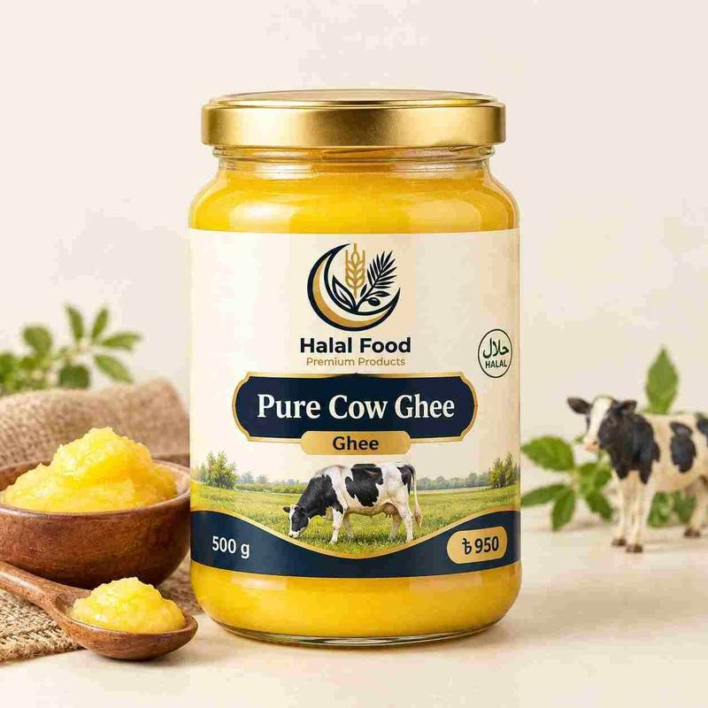

Blog / Ghee
Cow Ghee vs Buffalo Ghee: Differences, Price and Which One to Buy

Cow ghee vs buffalo ghee is a question that comes up in almost every Bangladeshi kitchen. Many families like to use gawa ghee, the traditional cow ghee, for polao, khichuri and sweets. Others prefer buffalo ghee for its rich taste. Both are real ghee, but they are not the same. They differ in colour, texture, aroma, fat and price. In this guide, we compare them in simple words, so you can choose the right one for your cooking, your taste and your budget.
Quick answer: Cow ghee is golden, soft and mild, and it has a little less saturated fat. Buffalo ghee is white, firmer and richer. Both are almost pure fat and give similar vitamins, so neither one is a miracle food. Choose cow ghee for a light aroma and everyday cooking, and buffalo ghee for rich dishes and sweets. Most of all, choose pure ghee from a trusted seller.
Cow Ghee vs Buffalo Ghee at a Glance
| Point | Cow ghee (gawa ghee) | Buffalo ghee |
|---|---|---|
| Milk used | Cow milk | Buffalo milk |
| Colour | Golden yellow to pale yellow | White to creamy white |
| Texture | Softer, melts quickly | Firmer, more solid |
| Taste and aroma | Mild, sweet and light | Rich, heavy and full-bodied |
| Saturated fat | A little lower | A little higher |
| Common use | Everyday cooking, polao, khichuri, paratha | Rich dishes, sweets, frying |
| Price in Bangladesh | Often higher per kg | Often lower per kg |
What Is Ghee?
Ghee is clarified butter. It is made by heating butter or cream slowly until the water evaporates and the milk solids separate. What is left is a golden, pure fat with a strong, pleasant smell. In Bangladesh, the word gawa ghee usually means ghee made from cow milk.
Because ghee is almost all fat, it keeps for a long time, handles high heat well and gives a deep flavour to food.
Why Is Cow Ghee Yellow and Buffalo Ghee White?
This is the first difference most people notice. The colour comes from beta-carotene, a pigment that cows take in from green grass and fodder, and a part of it passes into the milk fat. Buffaloes turn almost all of their dietary beta-carotene into vitamin A before it reaches the milk, so buffalo milk has little or no beta-carotene. That is why buffalo ghee is white even though the animal eats similar food. Source: Agriculture Institute.
A small warning: the colour of cow ghee is not fixed. The amount of beta-carotene in cow ghee depends on the breed, the feed, the season and the stage of milk production. So a lighter shade does not always mean fake, and a deep yellow colour does not always mean pure. Source: Consumer Voice.
Texture, Taste and Aroma
Cow ghee is usually light golden and softer, and it melts quickly at room temperature, while buffalo ghee is whiter, firmer and more solid. Dairy-science sources explain that buffalo ghee is harder because it has more of the fats that stay solid at room temperature. Source: Dodla Dairy.
On taste, many people find cow ghee mild, sweet and light, and buffalo ghee rich and heavy. This is a matter of personal taste. Neither is “better” in flavour. It depends on the dish and on what you grew up eating.
Nutrition: How Different Are They?
Both are nearly 100% fat, and both give a good amount of calories. One tablespoon of ghee has about 120 calories and about 14 g of fat.
- Saturated fat: Cow ghee has nearly 5% less saturated fat than buffalo ghee. The difference is small. Source: Dairy Knowledge Portal.
- Vitamins: Both naturally contain fat-soluble vitamins A, D, E and K, though amounts can vary. Source: Dodla Dairy.
- Overall: The overall chemical composition of the two is quite similar. Source: Agriculture Institute.
You may read on some websites that cow ghee is far healthier, or that buffalo ghee is far healthier. Be careful with such claims. The honest picture is that the two are close, and the amount you eat matters more than the type. Ghee is a rich fat, so use it in small amounts.
Which Is Healthier: Cow Ghee or Buffalo Ghee?
There is no strong proof that one is clearly healthier than the other. Some traditions rate cow ghee higher, and some people find it lighter to digest. But these are traditions and personal experience, not firm science.
What does matter for your health:
- Portion size. A teaspoon or two per meal is enough for many people, depending on their overall diet.
- Purity. Real ghee is preferable to a product mixed with vegetable fat.
- Your health condition. If you have high cholesterol, heart disease, diabetes or need to control your weight, ask your doctor how much ghee is right for you.
- Milk allergy. Ghee has very little milk protein, but traces can remain. If you have a milk allergy, ask your doctor first.
Which One Should You Choose?
For everyday cooking: Cow ghee. Its light aroma works in dal, rice, khichuri, paratha and vegetables.
For polao, biryani and special dishes: Gawa ghee is the traditional choice for the sweet aroma it gives.
For rich dishes and sweets: Buffalo ghee. Tradition links buffalo ghee with richer preparations. It gives a deep, heavy flavour to halwa and sweets. Source: Dodla Dairy.
For frying and high heat: Both work. Ghee handles high heat better than many oils.
For a lower budget: Buffalo ghee is often cheaper per kg, as we explain below.
For gifting: A well-packed jar of pure gawa ghee is a classic gift.
Cow Ghee vs Buffalo Ghee: Price in Bangladesh
Ghee prices depend on the milk, the brand, the method, the pack and the season, and they rise before Eid and Ramadan.
- A Bangladeshi online price list for August 2026 showed gawa ghee at about Tk 1,350 to Tk 1,414 per kg, premium ghee at about Tk 1,482 per kg, and Pabna’s pure ghee at about Tk 1,700 per kg. Source: BDStall ghee listings.
- Another Bangladeshi shop said ghee usually costs between Tk 900 and Tk 1,600 per kg, depending on brand and quality. Source: Othoba.
Cow ghee often costs more per kg because cow milk has less fat than buffalo milk, so more milk is needed to make one kilogram. These are only guide figures. Always compare the same type, the same weight and the same quality.
How to Spot Pure Ghee
Mixed and fake ghee is a problem. Some labels say only “desi ghee” without naming cow or buffalo, and these products can be blended, sometimes even with vegetable fat. Source: Organic Mandya.
- Read the label. It should clearly say cow ghee or buffalo ghee, and list only milk fat as the ingredient.
- Smell it. Real ghee smells warm, sweet and milky. A flat, oily or chemical smell is a warning sign.
- Check the colour. Cow ghee should be golden to pale yellow and buffalo ghee should be white. A very bright, unnatural yellow can mean added colour.
- Do not worry about grains. Many good gawa ghees have a grainy texture, often called dana. This forms naturally as the ghee cools and does not mean the ghee is fake.
- Compare the price. Real ghee needs a lot of milk, so a very low price is a warning sign.
- Buy from a trusted seller. Look for clean sealed packing, weight, a packing date and seller details.
An honest note: home tricks, like melting ghee on your palm or putting it in the fridge, are not reliable. Bangladeshi researchers check ghee quality in labs by testing things like moisture, acidity, melting point and iodine value. A lab is the only way to be sure, so a trusted source is your best protection. Source: Bangladesh Journal of Veterinary and Animal Sciences.
How to Store Ghee
- Keep ghee in a clean, dry, airtight jar, away from heat, water and direct sunlight.
- Always use a clean, dry spoon. Water or wet spoons spoil ghee quickly.
- A cool cupboard is fine. In very hot weather, the fridge keeps it fresh for longer.
- If it smells sour, bitter or like old oil, throw it away.
Easy Ways to Use Ghee
- On hot rice or khichuri, with a spoon on top
- In polao and biryani, for aroma
- For paratha, roti and luchi, brushed on top
- In halwa and sweets, for a rich taste
- For tempering dal, at the end of cooking
- On vegetables, a small spoon for flavour
Frequently Asked Questions
Which is better, cow ghee or buffalo ghee?
Neither is better for everyone. Cow ghee is lighter in colour, taste and texture, and has a little less saturated fat. Buffalo ghee is richer and firmer. Choose by taste, use and budget.
Is gawa ghee the same as cow ghee?
In Bangladesh, gawa ghee usually means ghee made from cow milk. Always check the label of the product to be sure.
Why is buffalo ghee white?
Buffaloes turn the beta-carotene in their food into vitamin A before it reaches the milk, so the milk fat has no yellow pigment.
How much ghee can I eat in a day?
A teaspoon or two per meal is a common amount for many healthy adults. If you have a health condition, ask your doctor first.
Which ghee has more calories?
They are almost the same, as both are nearly pure fat. Portion size matters more than the type.
Can I buy pure ghee online in Bangladesh?
Yes. You can order from the Halal Food Ghee collection and get it delivered to your home.
Final Thoughts
In the cow ghee vs buffalo ghee question, there is no single winner. Cow ghee gives a golden colour, a mild aroma and a slightly lower saturated fat. Buffalo ghee gives a white, firm and rich ghee that suits heavy dishes. What matters most is that the ghee is pure, fresh and used in small amounts. Read the label, compare the same type and weight, and buy from a seller you trust.
Want to know more about cow ghee? Read our guide to pure cow ghee, or visit our Ghee collection to choose the pack that suits you.